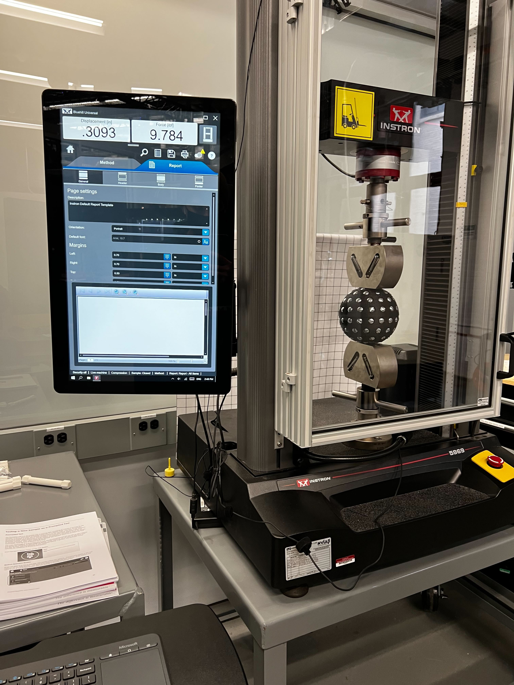
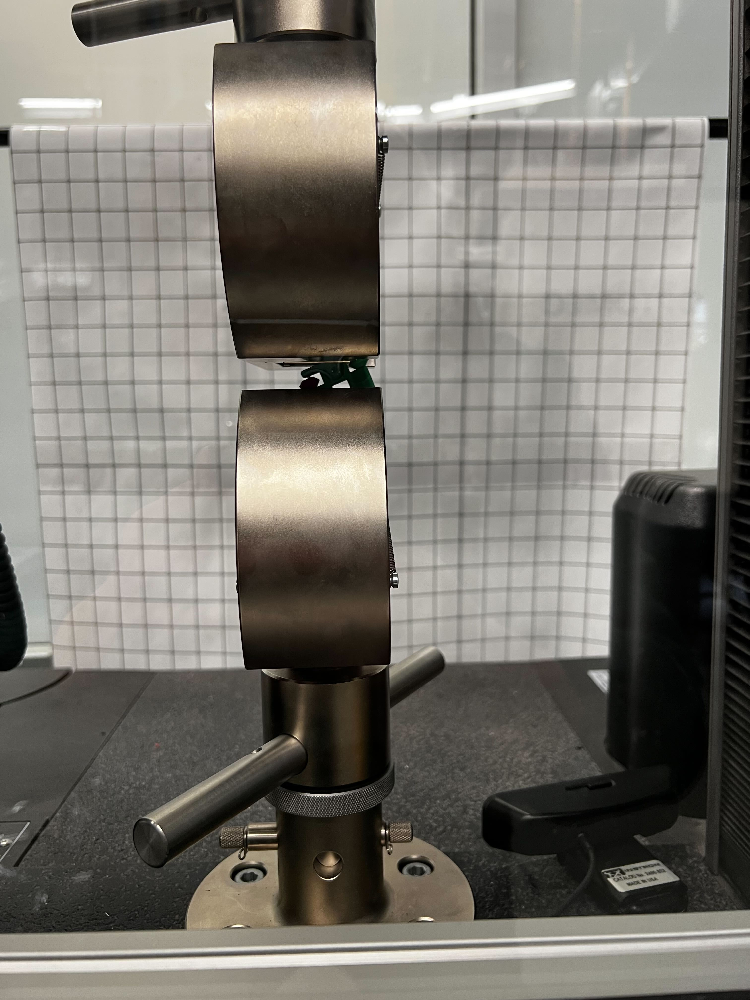
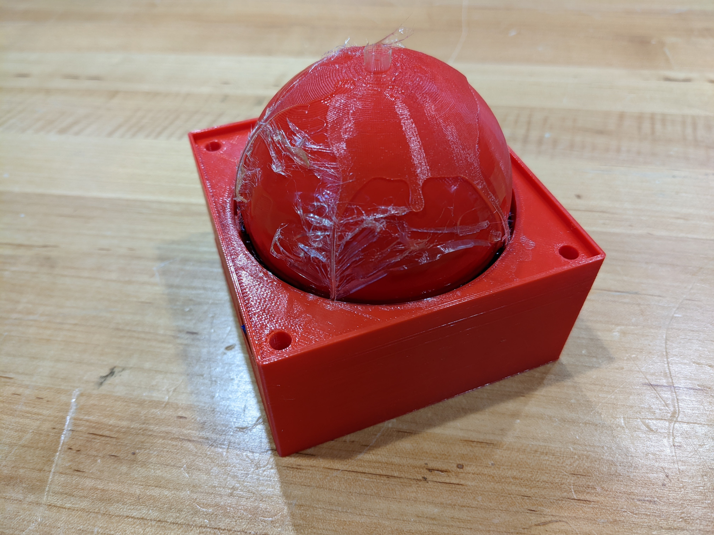
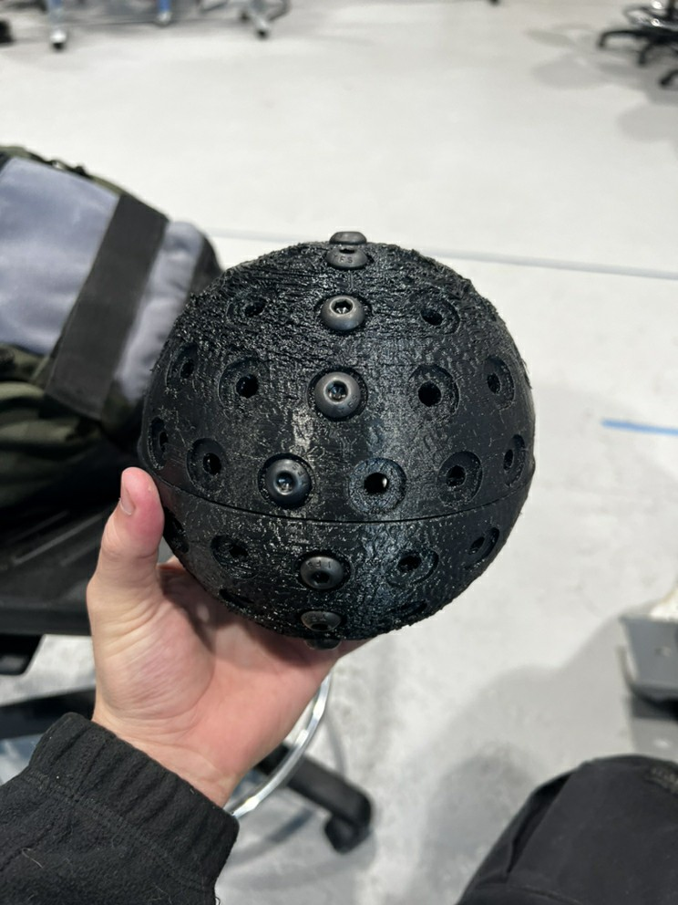
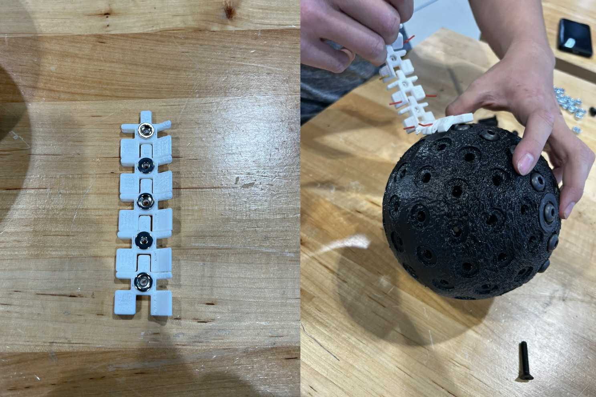
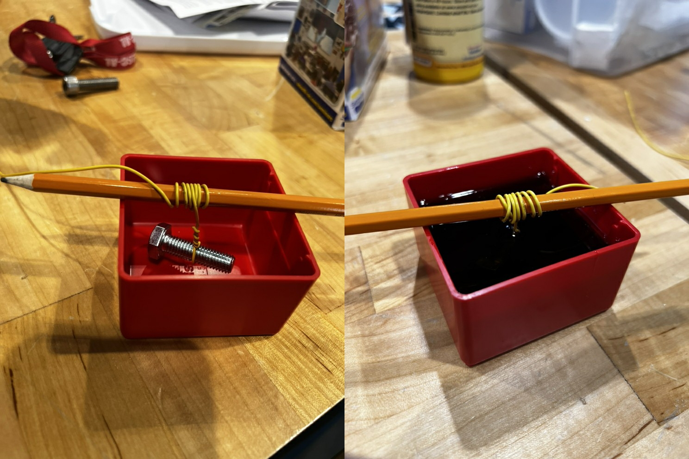
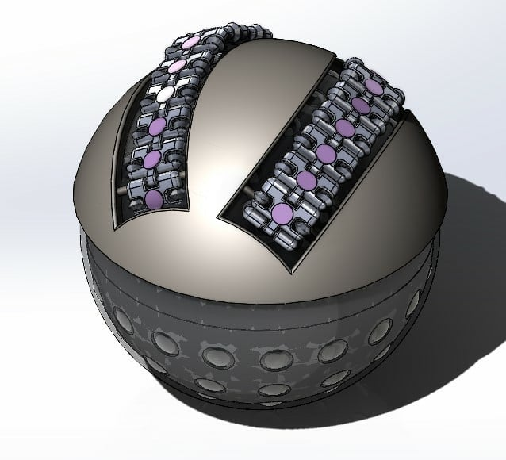

Since the last update, the team has received a partial approval of the our budget increase request. This means that we will not be able to construct three ball drives to create a fully mobile beta prototype, and we will instead be focusing on developing a single beta prototype to demonstrate at the Innovation Expo inside of a test stand constructed out of Makerbeams.

Many of the larger 3D printed parts have been fabricated and have been adjusted to further improve their strength and performance. This includes the motor mounts, which will need to be adjusted to improve strength, and the snap-fit magnet enclosures on the yoke, which were printed with extremely thin walls. As these adjustments are made, we will finalize each subsystem in our design and finish constructing our beta prototype.
In the past two weeks, the team has been iterating our designs for the yoke, spherical wheel, and spherical wheel mold. Additionally, the team has been finishing the design for the test stand to hold the yoke in place while testing the functionality of the entire MCBD module.
Next, the team will be focusing on an alternative coating material for the spherical wheel. Finally, the team has also requested a budget increase from the mechanical engineering department, as the goal is to create three of the ball drive modules, which have several costly parts. The Bill of Materials for the beta prototype can be found at the bottom of the Design page
In the past 2 weeks, the team has conducted several tests on the alpha prototype. First, the team ran a strength test on the spherical wheel and omni-chain links. The wheel withstood 40 lbs of pressure in the Instron testing machine, except when the pressure was applied along the seam between the two halves. Along the seam, the wheel could only withstand 4 lbs of pressure before splitting in half. The team will have to find an alternative assembly mechanism for the spherical wheel to mitigate this.
The team also conducted a tensile strength test on the omni-chain links. Some of our chain links were 3D printed with 100% infill, making them completely solid. These links could withstand up to 140 lbs of force before failure, and they should be usable in the beta prototype.
Finally, the team attempted to mold a rubbery coating around a scale model of the spherical wheel. After 2 days of waiting for the coating to cure, the team found that the coating had compressed to only fill half of the mold, and we were unable to remove it from the mold despite using a mold release spray prior to filling it.
As a result, the team will be looking into alternatives including painting the spherical wheel with the coating in open air or using a different coating material.
After coming back from winter break, the team decided to start off strong and begin build the MCBD 2.0 prototype. After receiving the orders we made last semester, we were able to start assembling our spherical wheel prototype. The team began by adding the steel screws to the 3D printed wheel halves.
The halves were originally supposed to screw together, but the threads were not successfully printed. However, the halves can still be assembled, because they have snap fit instead. The team also placed the omni-chain magnets into the links and began testing the magnetic strength with the spherical wheel.
Finally, the team also began testing the molding material purchased by the previous team, to ensure that it was still potent and investigate its physical properties. Some of the molding material was mixed and added to a container, and it will continue curing for a few more days.
This is the end of our first semester! In the past two weeks, the team has continued making changes to our alpha prototype design to increase manufacturability and added geometry to the yoke design in order to mount the actuators to the ball drive. The team has determined that the ball drive will be actuated by two motors which are connected to the omni-chains by belts and pulleys. We plan to continue working on our alpha prototype as parts are obtained. See you next semester!
In the past two weeks, the team has continued refining the design for our alpha prototype. The omni-chains have been moved to a slightly different orientation on the yoke in order to simplify the control system later on. The spherical wheel has been made slightly thinner. This will allow us to use shorter screws in the spherical wheel, which will reduce the weight and cost of the wheel. The team has been reconsidering actuators to provide adequate speed and torque to the spherical wheel, but we have also begun ordering and manufacturing some of the parts for our alpha prototype.
Since the last update, the team has conducted large portions of our planned technical analysis. We've refined our spherical wheel design to be two 1-inch thick hemispheres that screw together. We plan to use nuts and bolts instead of iron rods for easier assembly. The team also determined that magnets on the omni-chains alone will not be sufficient to maintain coupling between the wheel and yoke, so we will be adding additional magnets to the inside of the yoke. Finally, there were concerns about the spherical wheel moving side to side within the yoke, so we have changed the design to use two omni-chains instead of one to center the wheel.
In the past two weeks, the team has begun elaborating on our design and performing a technical analysis. A major change has been changing the single large rod in the spherical wheel to several smaller rods spaced evenly about the surface of the ball.

The team has determined a number of calculations will need to be performed to ensure our design meets our own metrics. The first set is a kinematic analysis to ensure the ball drive will function correctly while navigating inclines and small obstacles. Secondly, a number of CAD studies will be conducted to determine the load carrying capacity of the ball drive and the weight of the ball drive itself. Third, research will be performed on magnetic Halbach arrays to determine how to arrange the magnets on our design for optimal magnetic coupling. Finally, a bill of materials will be assembled and a final cost of the ball drive will be determined.
At the start of our project, the team performed some background research into existing products and potential issues, in order to inform our design process. We found that while spherical ball drives have existed as early as the 1950's, the idea was largely ignored due to poor performance. Simultaneously, the team developed a set of product needs and corresponding metrics for our design to meet. These metrics defined the size of the ball drive, the load carrying capacity, ease of manufacturing, cost, and operational performance.
With this background material, the team began generating design concepts for the three subsystems of the ball drive: the drive system, the spherical wheel, and the internal structure. These subconcepts were then combined into several design concepts. Several design concepts were screened out based on our metrics, and we were left with three finalist concepts: the Twist & Lock, the Bottom Omni-Wheel, and the Induced Omni-Wheel. Finally, the finalist designs were more precisely scored against our metrics, and the Induced Omni-Wheel design was selected.